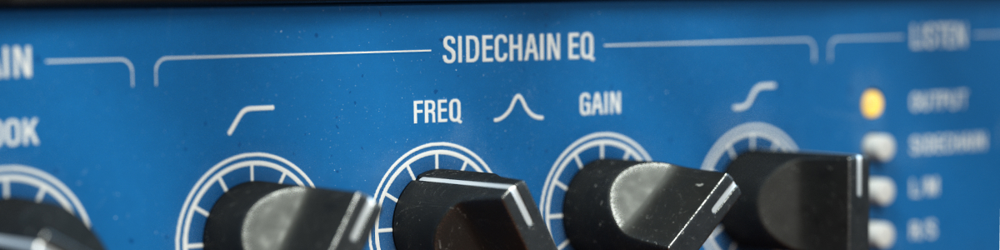
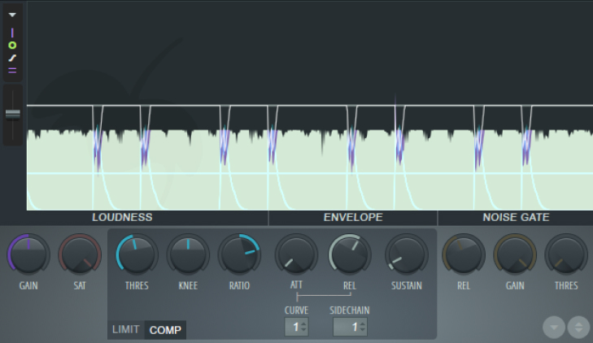
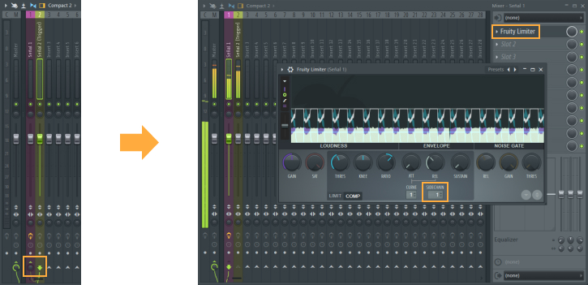

Jueves 9 de Enero, 2020 | Agustín Sztrajman
Agustín Sztrajman
Con “Sidechain” nos referimos a la técnica en la cual un compresor es activado mediante un disparador externo. ¿Muy complicado? Tratemos de entenderlo mediante un ejemplo.
Imaginemos una situación en donde tenemos 2 señales: una pertenece a un sintetizador manteniendo una nota constante, mientras que la otra pertenece a un redoblante.
Nuestro objetivo es que la amplitud de la señal proporcionada por el sintetizador disminuya algunos decibeles cada vez que suene el redoblante. Lo que hacemos es asignar un compresor al canal del sintetizador, y mediante el routeo entre ambos canales, activar la opción de Sidechain que tal compresor nos proporciona (no todos los compresores poseen la alternativa de ser utilizados como Sidechain).


¿Por qué y en qué casos utilizar el Sidechain?
Su caso más general y evidente será respecto de los elementos percusivos tales como un bombo o un redoblante. Para que estos puedan escucharse adecuadamente a lo largo de una canción sin ser enmascarados por otros sonidos que ocupen un rango similar de frecuencias, deberán hacer uso de esta técnica.
Además, esto atenuará el pico de decibeles resultante cada vez que suenen, dando lugar así a un volumen general más alto.
Uso artístico
Además de ser utilizado por las razones previamente explicadas, se le puede dar un uso estilístico dependiente de los parámetros a aplicar en el compresor.
Particularmente en la música electrónica, se ha hecho popular el efecto de “Pump” en las lineas de bajo. ¿Cómo lo logramos? Los parámetros pueden variar según la situación, pero el concepto se basa en un Threshold bajo, un Ratio alto, un Attack corto y un Release largo. La combinación de estos 4 parámetros sobre un sonido que suene justo a continuación de un elemento percusivo dará la sensación de bombeo por parte de este.
¿Cómo asignarlo?

Para asignar la función de Sidechain en un compresor es necesario elegir una señal que funcione como Trigger (la que se ocupa de activar el mismo) y otra señal que será la que resulte afectada por el mismo.
En la seccion Mixer del DAW a utilizar, se deberá routear el canal que posee asignado el Trigger al canal de la señal a afectar (en el caso de ser FL Studio como se muestra en la imagen, se hace click derecho en la flecha inferior y a continuacion “Sidechain to this track”, lo cual generará un enlace entre ambos canales).
Luego, se asigna el compresor al canal de la señal a afectar y por último se habilita la seccion de Sidechain. En el caso retratado, se desplaza el número 0 hacia el 1. En el caso de tener más de un enlace de Sidechain, deberán asignarse varios compresores al canal y el número podrá incrementar para asociarlo al canal deseado, manejando así cada enlace independientemente.
Alternativas
Actualmente existen diversas técnicas y maneras de lograr resultados similares al del Sidechain, igualmente de válidas que este, según la situación amerite.
Estas pueden ser automatizaciones de volumen, ecualización y Gaters.


{kind=link}
{kind=link}